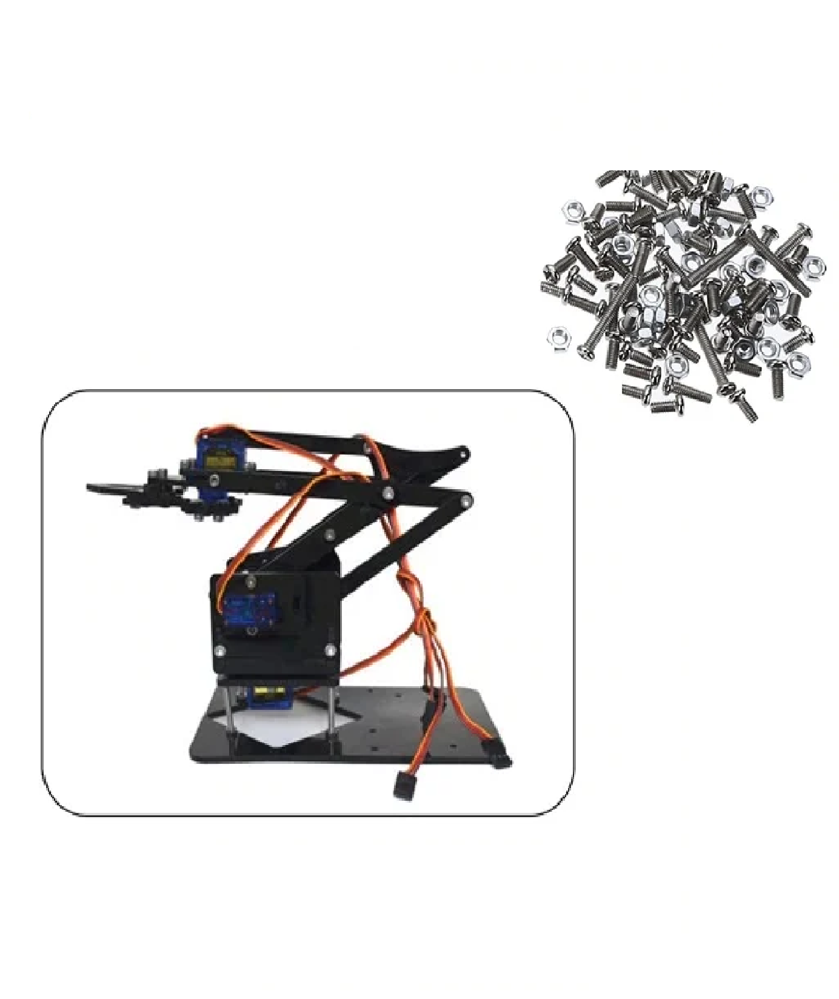

It is a DIY Acrylic Robot Manipulator Mechanical Arm (not-including Servo and Board). The arm has 4 DOF. The mechanical parts are laser cut to precision and are versatile to use.
Note:
The robotic manipulator mechanical arm is not assembled with all the necessary parts present in the kit. Also, the kit does not include servo motors, controller boards, and other accessories.